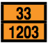

HAZARD IDENTIFICATION NUMBERS DISPLAYED ON SOME INTERMODAL CONTAINERS
Hazard identification numbers utilized under European and some South American regulations, may be found in the top half of an orange panel on some intermodal bulk containers. The United Nations 4-digit identification number is in the bottom half of the orange panel.
The hazard identification number in the top half of the orange panel consists of two or three digits. In general, the digits indicate the following hazards:
2 - Emission of gas due to pressure or chemical reaction
3 - Flammability of liquids (vapors) and gases or self-heating liquid
4 - Flammability of solids or self-heating solid
5 - Oxidizing (fire-intensifying) effect
6 - Toxicity or risk of infection
7 - Radioactivity
8 - Corrosivity
9 - Risk of spontaneous violent reaction
NOTE: The risk of spontaneous violent reaction within the meaning of digit 9 include the possibility, due to the nature of a substance, of a risk of explosion, disintegration and polymerization reaction followed by the release of considerable heat or flammable and/or toxic gases.